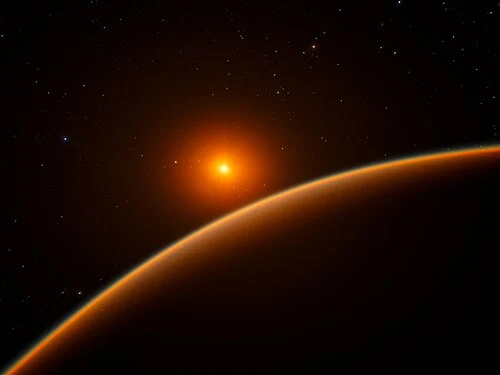

LHS 1140 b - Exoplaneta

Introdução e História
LHS 1140 b é um exoplaneta classificado como super-Terra, localizado a cerca de 40 anos-luz da Terra na constelação de Cetus. Foi descoberto em 2017 por meio de observações de trânsito e velocidade radial, tornando-se um dos exoplanetas mais promissores para estudo de habitabilidade.
Por orbitar sua estrela-anã vermelha dentro da zona habitável, LHS 1140 b atrai atenção científica pelo potencial de possuir água líquida em sua superfície ou atmosfera, dependendo de suas condições internas e composição atmosférica.
Características Físicas: Massa, Tamanho e Órbita
O exoplaneta possui cerca de 5,6 vezes a massa da Terra e aproximadamente 1,73 vezes seu raio, indicando uma densidade que sugere uma composição rochosa com possibilidade de água abundante.
LHS 1140 b orbita sua estrela a aproximadamente 0,0946 unidades astronômicas, completando uma volta a cada ~24,7 dias. A estrela emite menos energia que o Sol, tornando a recepção de luz comparável à luz solar na Terra em latitudes mais frias.
Potencial de Habitabilidade
- Água Líquida: Possível presença de água sob condições atmosféricas favoráveis.
- Fonte de Energia: Recebe energia suficiente de sua estrela para manter temperaturas que permitam água líquida.
- Ingredientes Químicos: Exoplaneta rochoso com potencial de compostos inorgânicos que poderiam sustentar química pré-biótica.
As pesquisas sugerem que LHS 1140 b é um dos melhores candidatos para estudo de mundos habitáveis fora do Sistema Solar.
Curiosidades
LHS 1140 b é considerado uma super-Terra "próxima e silenciosa", ideal para observações futuras com telescópios de próxima geração como o James Webb.
Por estar dentro da zona habitável de sua estrela, ele permite estudos sobre atmosferas, composição e possibilidade de oceanos em exoplanetas rochosos.
Origem do Nome
O nome LHS 1140 b segue a nomenclatura astronômica padrão para exoplanetas: LHS é o catálogo da estrela hospedeira, 1140 é o número da estrela nesse catálogo, e "b" indica que é o primeiro planeta descoberto em órbita dessa estrela. Não há referência mitológica neste caso.
Referências
- Wikipedia. LHS 1140 b. Disponível em: https://pt.wikipedia.org/wiki/LHS_1140_b. Acesso em: 26 dez. 2025.
- NASA. LHS 1140 b – Exoplanet Exploration / NASA Science. Disponível em: https://science.nasa.gov/exoplanet-catalog/lhs-1140-b/. Acesso em: 26 dez. 2025.